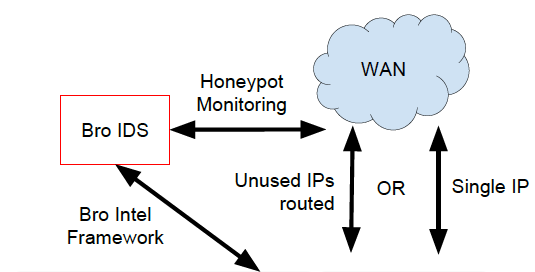

Emily (Linh) Cao
Master GraduateSchool of Information Sciences (iSchool @ Illinois)
University of Illinois at Urbana-Champaign
LinkedIn · Github · Twitter · Email · Resume
I am Emily (Linh) Cao, a Master graduate in Library and Information Science at the University of Illinois (UIUC). My research focuses on building distributed honeypot networks connecting national labs and universities. The system is being deployed at the National Center for Supercomputing Applications (NCSA) for real-time sharing of security alerts.
In my Master training, I have accumulated:
(1) strong theoretical foundation of information sciences (probabilities, statistics, mining unstructured data coursework), and
(2) practical experiences of operating large scale, secure data pipeline (continuous integration, SSH honeypot, automated peer-to-peer security intelligence gossiping up to millions of events per second).
Research
I have participated in the following research projects.
-

Distributed Honeypot and Security Intelligence Sharing
The SDAIA project addresses a critical need for security solutions for open science networks, such as the Science DMZ model, and addresses the special architecture of these networks through a virtual security appliance that benefits from shared intelligence to protect the site, and further provide intelligence to the wider community. The poster will present the unique architecture of SDAIA and its reliance on Apache Kafka. Apache Kafka is designed to distribute message extensively and it is easy to scale out. This system helps sharing real-time attacks from honeypot to other components in event store for quickly spreading threat among open science networks.
Teaching
Teaching Assistant for Instructional and Technology Design Office, School of Information Sciences, UIUC
Code Samples
A state machine implementation of TCP transport layer in Python.
A HTTP proxy that supports caching and partial content streaming.
A Python client that links Kafka and ZeroMQ.
Contact
School of Information Sciences (iSchool @ Illinois)
501 E. Daniel St
Champaign, IL 61820, USA
Google Voice: (650) 285-1143
E-mail: linhcaoX@illinois.edu (where X is 2)
https://github.com/emlcao
Affiliations